Senior Product Designer @JP Morgan & Chase (Payments B2B2C)
Previously fintech and retail product design, after 5 years+ in digital marketing in London and Hong Kong
Trained by
Persuasive Emotional Design
Design Tradeoffs & UX Decision-Making
Facilitating UX Workshops
Complex Apps for Specialized Domains
Previously worked in
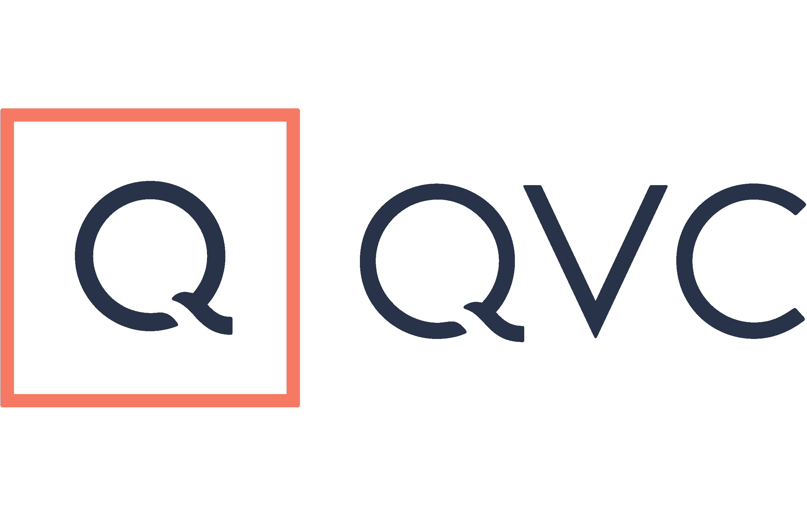
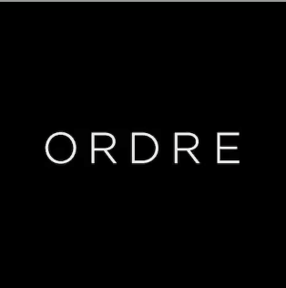
About
Design that empowers, not just impresses.
A curious and passionate problem-solver with a strong sense of empathy, committed to accessibility and inclusive design. My work spans UX/CX design across fintech, enterprise and AI, following five earlier years in digital advertising — fast-paced and client-facing work that built adaptability and communication.
“Design experiences that are not only impactful but also practical — delivering solutions that genuinely empower users.”
Product design clients
JP Morgan (Payments)
QVC
BT Group
Upgrade Pack
Ordre
Sun Life Financial Insurance
Attitude is Everything
Digital marketing clients
Jack Wills
Links of London
Bare Minerals
Dixons
Currys PC World
Ralph Lauren
Hilton Worldwide
and other luxury & retail brands
Beyond work
What I do with the rest of the week.
01
Volunteer design
Design guidelines for @buddhist.connected.hk, ongoing since March 2024.
Guidelines
Instagram
Since Mar 2024
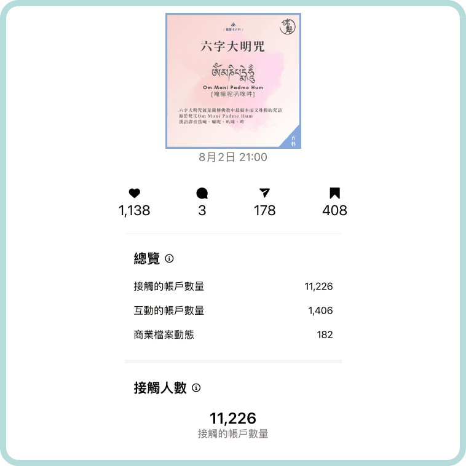
02
Sound healing
Trained in Nepal in late 2024; hosts events in London.
Himalayan bowls
Live events
Nepal → London
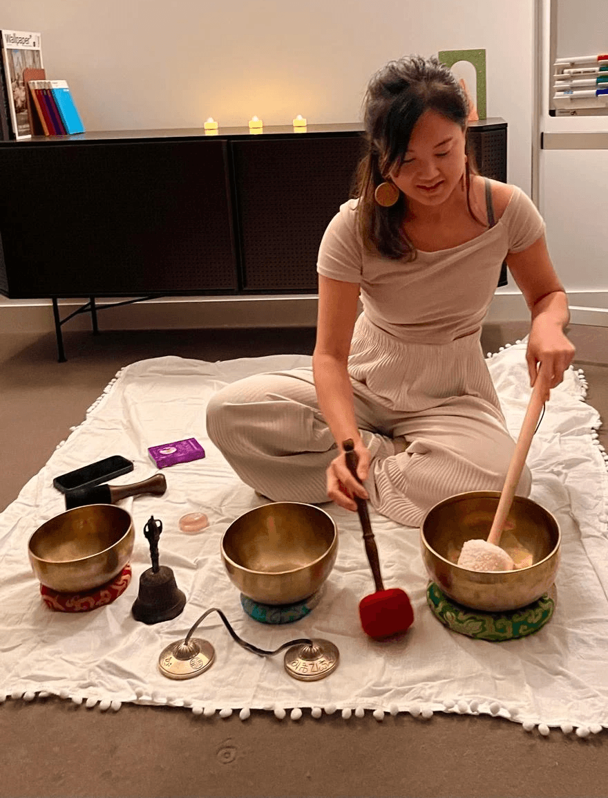
03
Photography & travel
Nature, architecture, dramatic skies.
Ongoing→
04
Aerial arts
Hoops, silks and trapeze since summer 2024.
Hoop
Silks
Trapeze
Since 2024
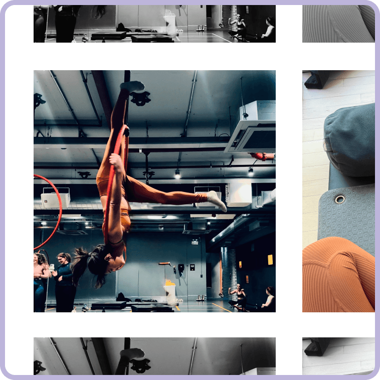
Currently exploring
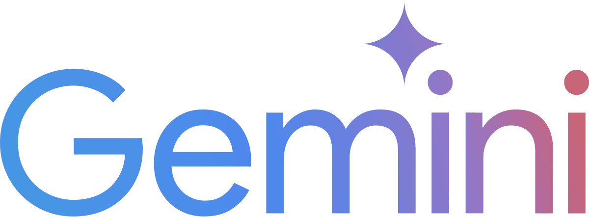
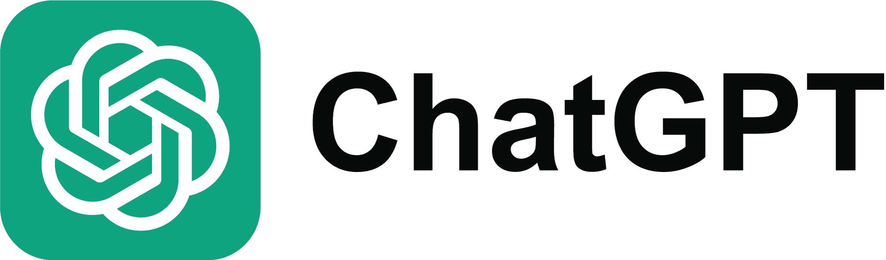
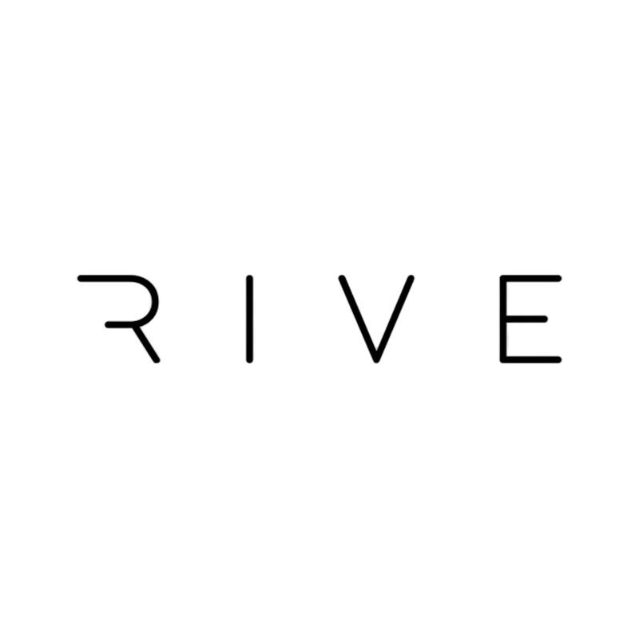
Selected work
Complex systems, made to feel simple.
Four case studies across automotive payments, retail livestreaming, enterprise merchant onboarding and an internal AI hackathon.
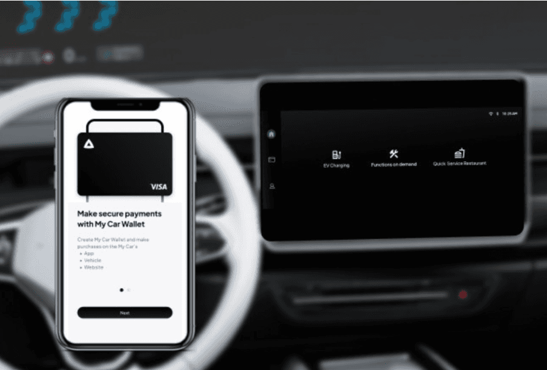
Mobile App & In-Car Infotainment
Mobile & In-Car Payments
Researched and developed a design system using Google Automotive OS (AAOS) components, with accessibility in mind, to create the infotainment system showcased at CES 2024 and 2025.
Design system
Automotive OS
Q3 2022 – present
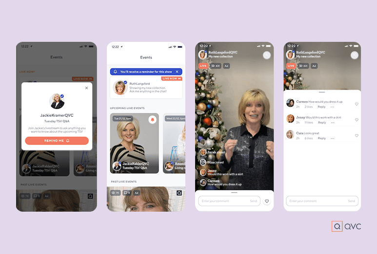
Interaction design | iOS & Android
Livestreaming
We have created a lot of screens for live streaming, however due to dev and budget limitations we might not be able to launch with our ideal journey flow. Final MVP would depend on the goal that we want to focus on.
QVC
8 sprints
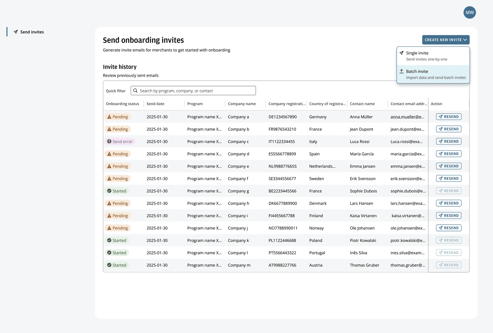
Responsive web design
Merchants Onboarding
Improve the current know your business (KYB) onboarding experience. The main goals are to reduce time for the E2E process and increase onboarding capacity by more than 150%, utilising JPM's SALT design system.
JP Morgan UK
Q3 2025
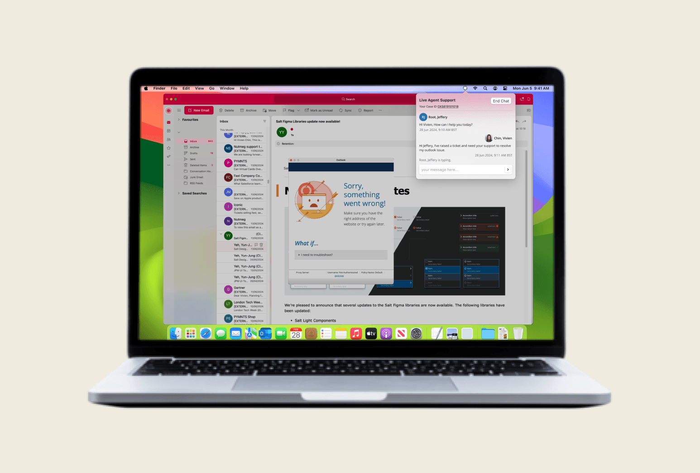
Hackathon | UX/UI design & research
APEX AI Assistant
A 48-hour hackathon concept for automated internal tech-issue resolution — an AI assistant that identifies issues, learns from internal data and resolves or escalates them.
🏆 6th of 32 groups
48 hours
June 2024
Currently building
Side projects I design and build myself.
These run locally on my own machine, so the links below only resolve there.
Ask Maria
Invite-only beta
An airfare assistant that lives in Telegram. You tell her where you'd rather be in plain English; she watches the fares and messages back only when there's something worth knowing.
Conversational UI
Amadeus API
Python + SQLite
askmaria.app
SplitEasy
Single file
Splitwise-style expense splitter — multi-currency trips and a settle-up algorithm that reduces who-owes-who to the fewest transfers.
20 currencies
Settle-up algorithm
No build step
InnerWaves
Runs locally
Tarot / I-Ching reading app with a retrieval layer and a feedback loop that turns well-rated readings into examples for future ones.
RAG
Feedback loop
Bilingual
Attune
Pre-launch
A sound-healing membership for ADHD, anxiety and sleep — brand, pricing and landing page, built to test demand before a single line of app code.
Product strategy
Design tokens
No build step
Daily News Dashboard
Runs locally
Bilingual EN/粵語 newspaper-style briefing covering UK, London, Hong Kong and Global, rebuilt every morning.
Bilingual
Scheduled
Also built
Finance HubPersonal finance dashboard
OrchestratorA Director drives planner → coder → tester → reviewer agents across the projects in this workspace, with every run tracked to a verdict
Project HubAI agent-team orchestrator
PostmarkedTravel map and digital postcard studio
Anti-FlareEczema anti-inflammatory diet app
Dream OracleDream analysis for Wavesbychin
If a link doesn't load, that app's local server isn't running.
Contact
Let's build something thoughtful.
Based in London, United Kingdom. Open to conversations about product design in fintech, enterprise systems and AI-driven work.